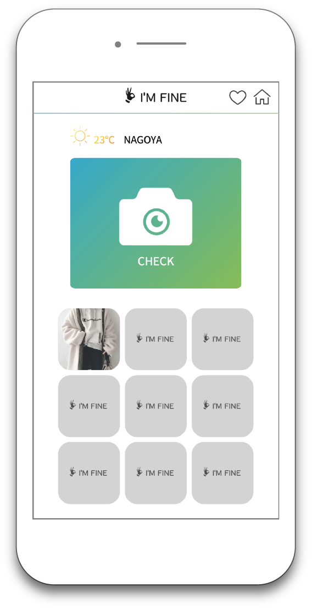
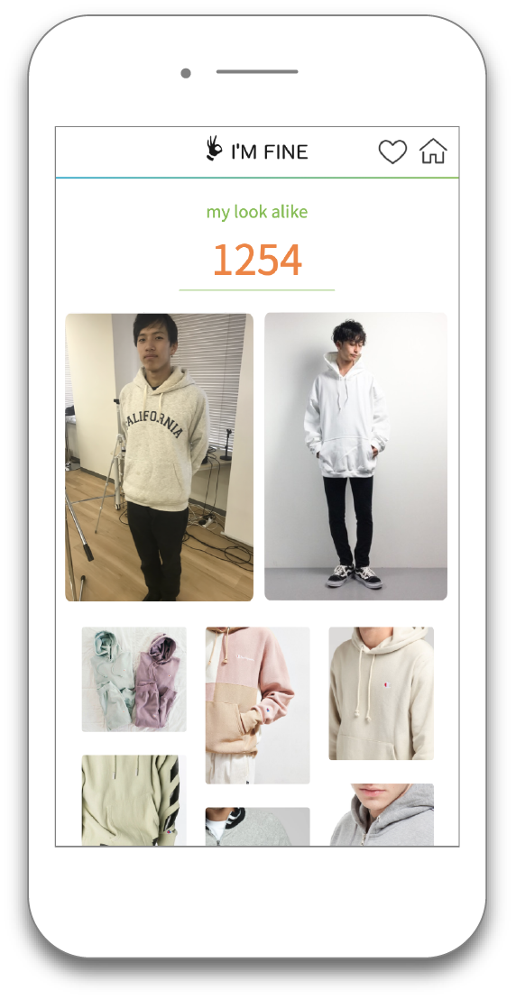

Works
芸工祭2019
デジタルサイネージ


制作背景
名古屋市立大学芸術工学部の大学祭“芸工祭”の案内板としてグループで作成した、デジタルサイネージです。芸工祭に遊びに来てくれた人への案内はもちろん、芸術工学部での制作活動を伝えたいという思いで始動しました。kinect・processingとWebページをNode.jsのWebSocketでつなぎ、人の動作でサイネージが動くようにしました。私は、Node.jsのサーバーを立てる部分からWebページのコーディングを担当しました。制作期間が短かったため、自分たちの持っているスキルの範囲で最大限のパフォーマンスができるように使うツールを選びました。当日、多くのお客さんに動かしてもらい、楽しそうにしている様子が見れてとても嬉しかったです。 紹介ムービー完全版はこちら